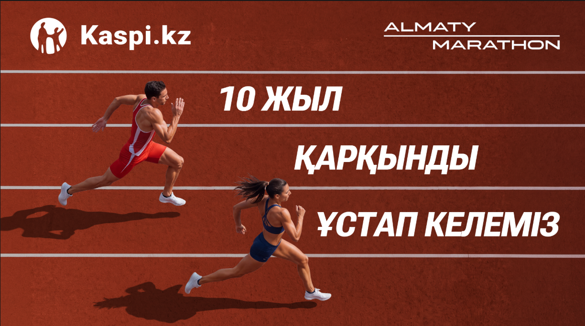

UMAP / ANDROID REFERENCE
Не приложение · данные не сохраняются
01 Язык
02 Дистанция
03 Форма
04 Спасибо
KK
RU
EN

ALMATY MARATHON
EXPO · 25—26 / 09
СӨЗБЕН ҚОЛДАУ / СЛОВА ПОДДЕРЖКИ
Твои слова помогут добежать
Қазақша
↗
Русский
↗
English
↗
Тілді таңдаңыз · Выберите язык · Choose a language
Almaty Marathon
Expo · 25—26 / 09
←
01 / 02
10
↗
21
↗
42
↗
Almaty Marathon
Expo · 25—26 / 09
←
42
↗
Тестовый участник
+7 ••• ••• •• ••
Уведомление о данных — после утверждения организатором. Здесь только образец.
↗
КЛАВИАТУРА · ОБРАЗЕЦ БЕЗ ВВОДА
Almaty Marathon
Expo · 25—26 / 09
✓
↗
Образец экрана. В приложении — только после сохранения, затем возврат через 4 секунды.